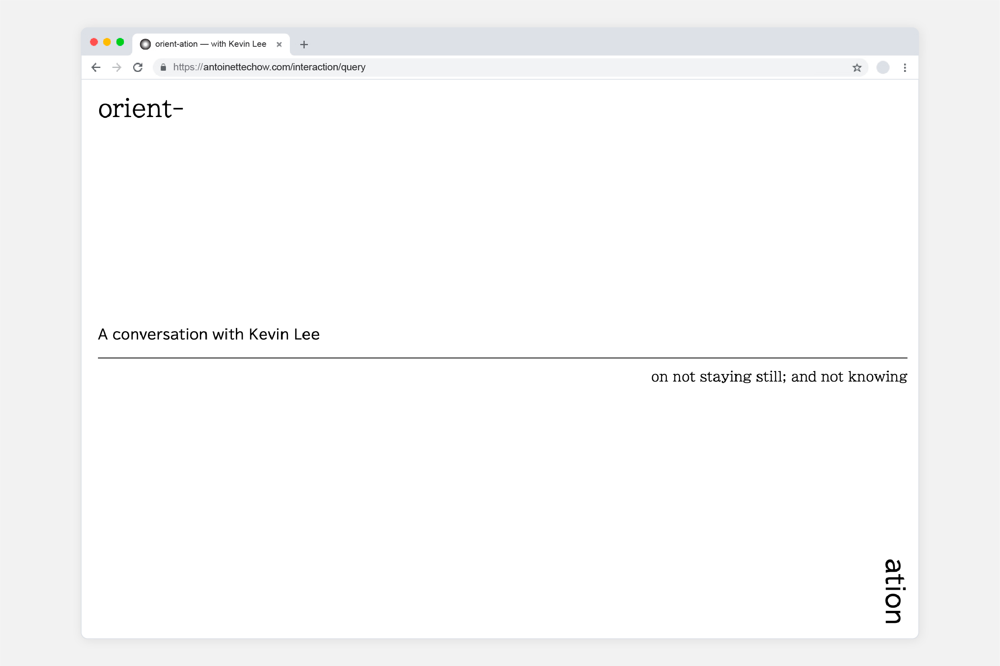
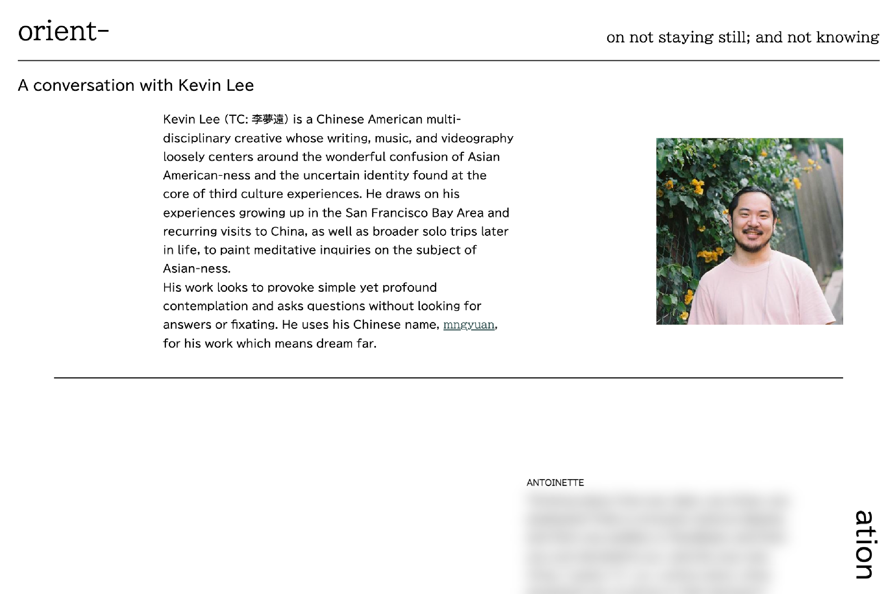
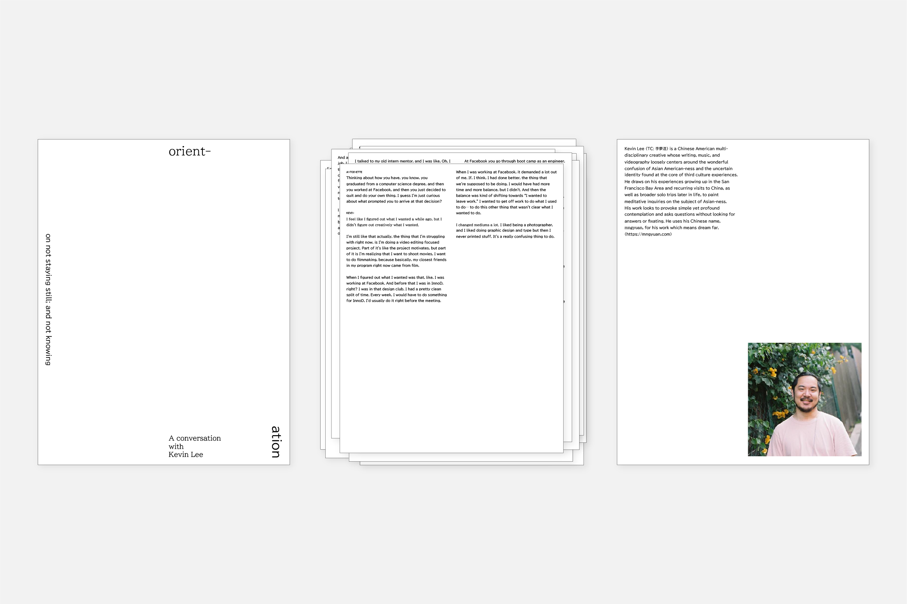

Transcribing an interview with a friend who has also moved cities, this project delves into the intricate dance of identity and belonging experienced by Asian creatives navigating cultural displacement. The website utilizes Media Query to dynamically shift between two distinct states, emphasizing the complexities of the theme.

Introduction to interviewee: Kevin Lee

Visitors of the site have to hover over certain texts to unblur the related excerpts, reflecting the idea of discovering and learning in a state of confusion.

The print state lacks the interactive element of hovering to unblur text, which is replaced by pages being unbound to obsure the order of text.